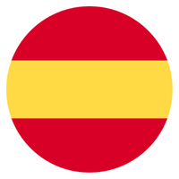

⏱️
00:00
🔥
0
✅
0
| ❌
0
Translation Lists 6

EN ➔ ES
ES ➔ EN
🎓 EXAM MODE
🌟 All Units (0-6)
🧩 Mixed Selection
Unit 0: Personal Info 🙋♀️
Unit 1: School Life & Rules 🏫
Unit 2: Recipes & Cooking 🍕
Unit 3: World Records 🏙️
Unit 4: Memories & Festivals 🎡
Unit 5: Ancient Romans 🏺
Unit 6: Summer Plans 🏕️
Select Units to Mix:
Apply Selection
...
🔊
...
🔊
❌
✅
🔙
0 / 0
🔜